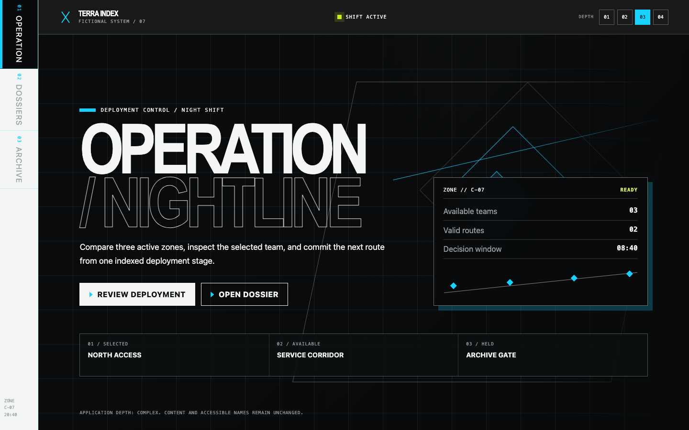
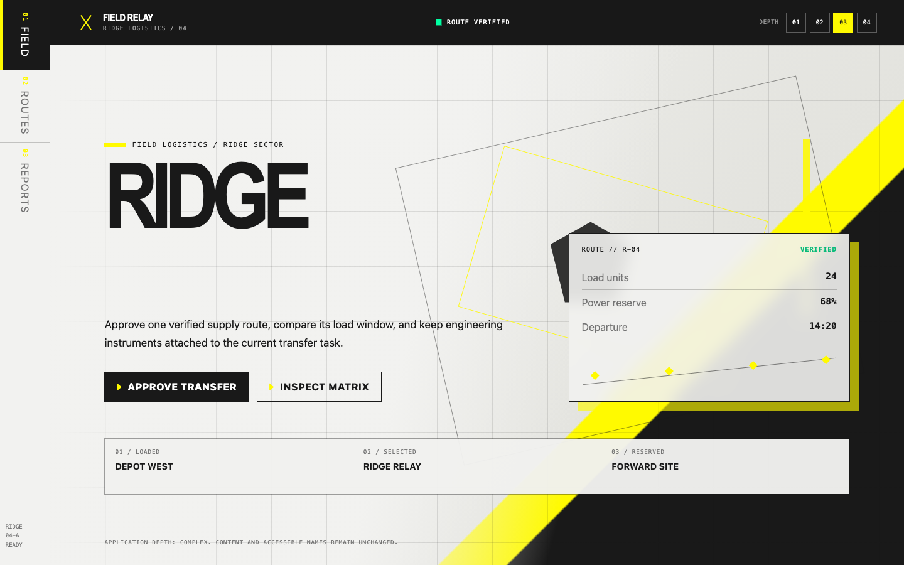
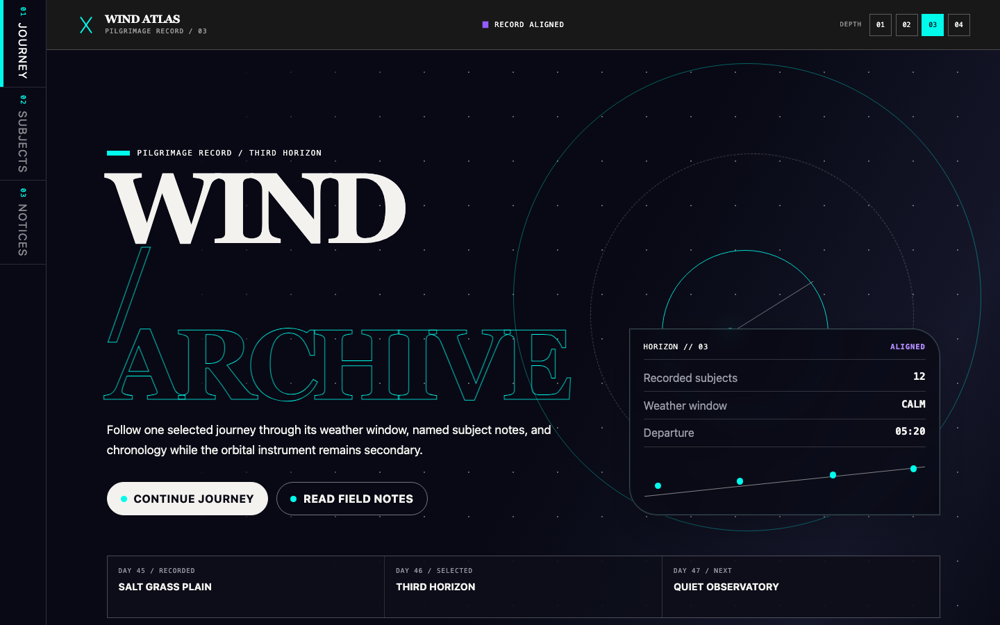
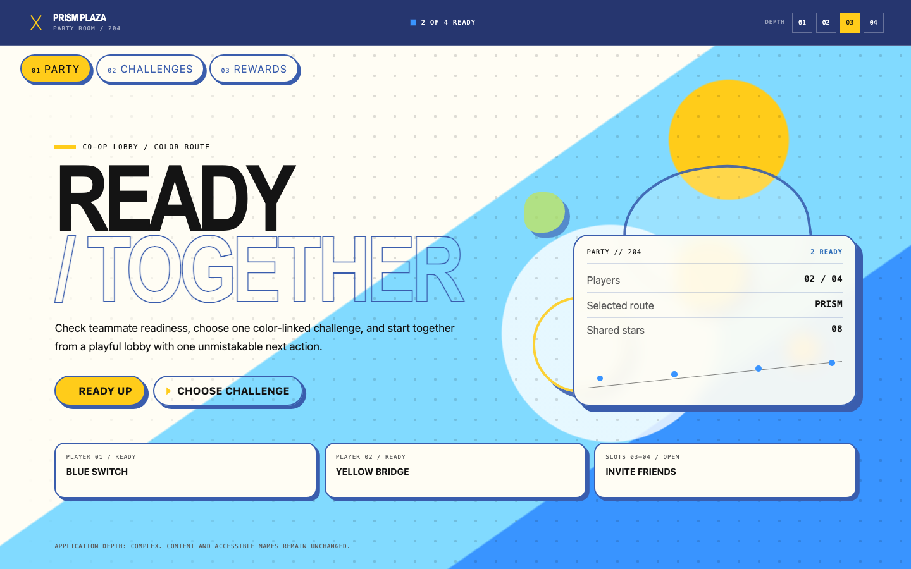
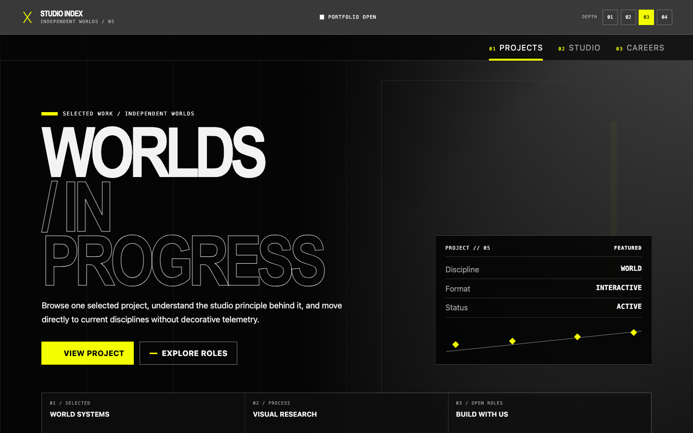
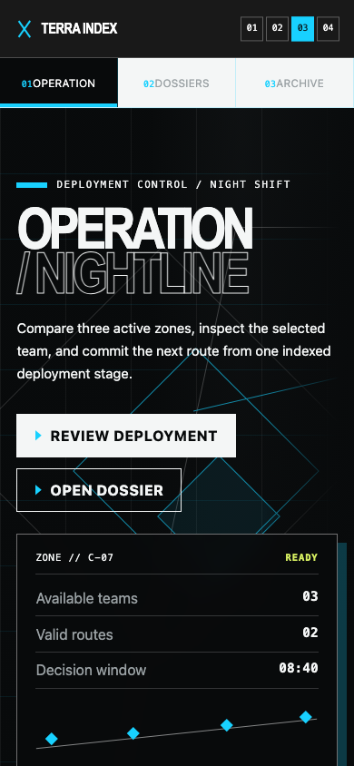
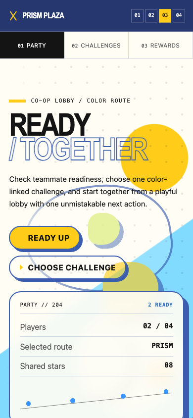
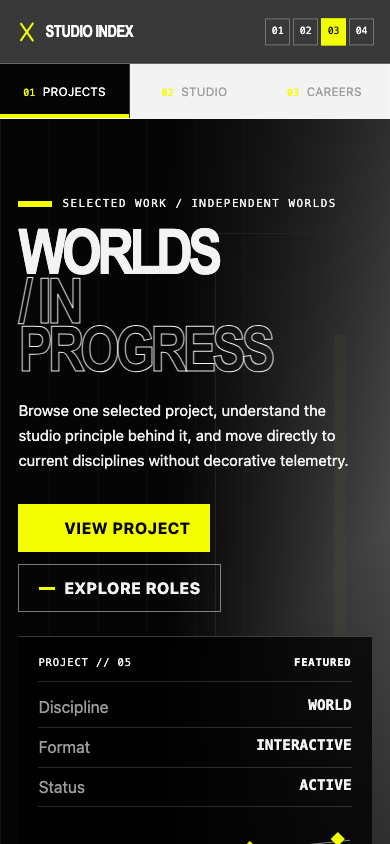

01 / ARK工业信息系统BLACK · WHITE · CYAN
ARK UIEVIDENCE-BASED INTERFACE SKILL
PROMO / 01
FAMILY × DEPTH = VISUAL CONTRACT
不只是一张皮肤
五种风格族，四档应用深度。
从设计证据到可运行前端。
05 风格族
04 深度等级
10 响应式样例



ARK UIFIVE VISUAL FAMILIES
PROMO / 02
ONE METHOD / FIVE DISTINCT COMPOSITIONS
五种风格，不是五套配色
切换风格时，壳层、舞台、内容归属与仪表结构都会变化。
02 / ENDFIELD现场工程系统PAPER · CHARCOAL · YELLOW
03 / EX ASTRIS宇宙档案系统MIDNIGHT · WHITE · AQUA

04 / POPUCOM明快协作系统BLUE · YELLOW · WARM WHITE

05 / CORPORATE克制工作室系统BLACK · WHITE · ACID LIME
ARK UIAPPLICATION DEPTH SYSTEM
PROMO / 03
DEPTH ≠ CONTENT DENSITY
从极简到极繁，
控制的是覆盖
深度决定壳层、舞台、组件、状态、动效与响应式重构程度。
关键识别层
壳层与舞台
全局系统重构
逐模式重新导演
ARK UIRESPONSIVE RECOMPOSITION
PROMO / 04
DESKTOP + PORTRAIT
响应式不是
简单缩放
侧栏变成顶部导航，舞台重新排版，主任务始终清晰。
1440×900390×844NO HORIZONTAL OVERFLOW


